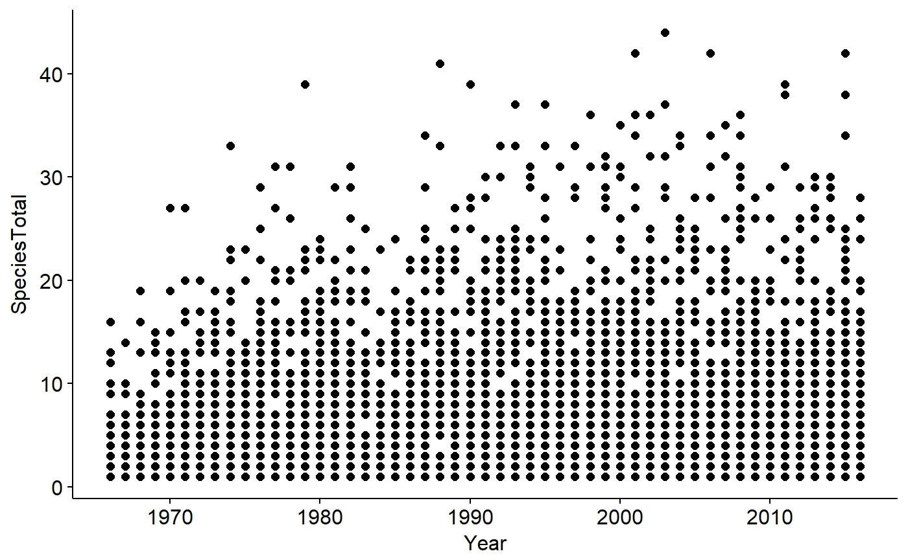
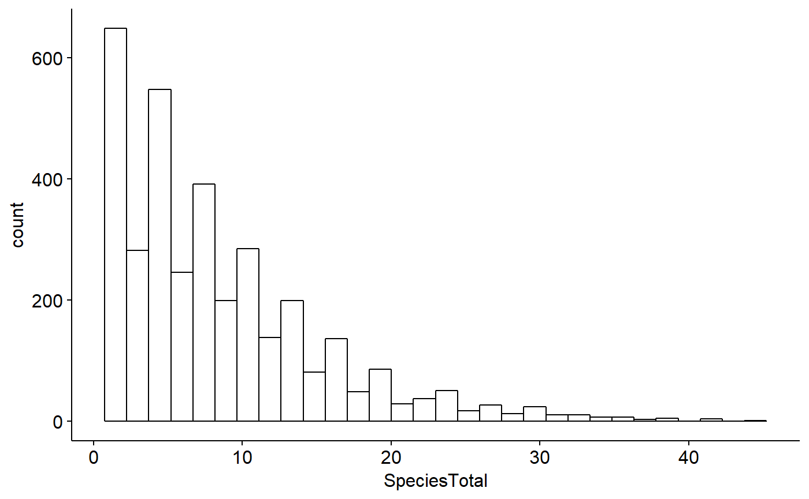
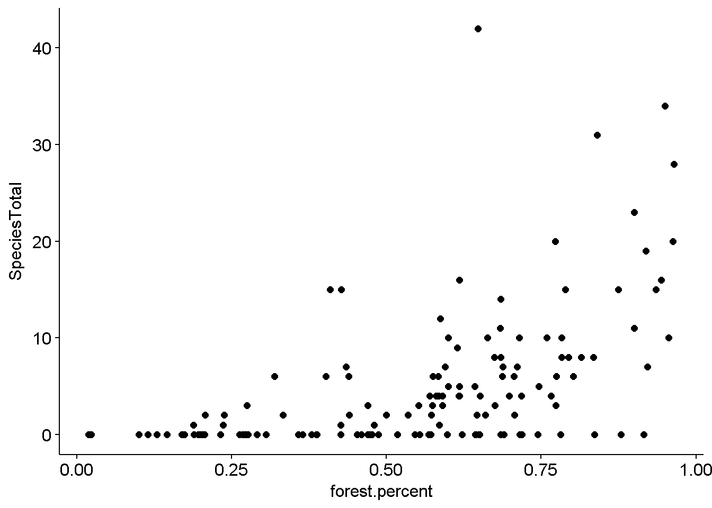

This vignette walks through the process of taking 2 complimentary sets of data and “merging” them using the powerful function full_join() in the package dplyr. We’ll take data on 1) the number of birds observed along USGS Breeding Bird Survey (BBS) routes and merge that ecological data with 2) geographic information on the types of landcover along those routes. In addition to this primary tasks of merging datasets, we’ll also do several other things to clean up the data to make it easy to use.
A good introduction to using dplyr is:
Beckerman et al’s book “Getting start with R: An introduction for biologists” 2nd ed.
“Selecting columns and renaming are so easy with dplyr” https://blog.exploratory.io/selecting-columns-809bdd1ef615
BBS and landcover data for Pennsylvania are in the wildlifeR package, and we’ll use the dplyr package to “reshape” into the proper format for analysis.
library(dplyr)
library(wildlifeR)We’ll use 2 datasets:
You can learn more about these data sets using the help command ?BBS_PA and “BBS_PA_landcover_1km”.
Load both sets of data
## BBS data for PA
data(BBS_PA)
##Landcover data for BBS routes in PA
data(BBS_PA_landcover_1km)head(BBS_PA)## countrynum statenum Route RPID Year Aou StopTotal SpeciesTotal
## 1 840 72 1 101 1970 1940 2 2
## 2 840 72 1 101 1970 2730 1 1
## 3 840 72 1 101 1970 3091 2 2
## 4 840 72 1 101 1970 3131 1 1
## 5 840 72 1 101 1970 3160 21 30
## 6 840 72 1 101 1970 3250 1 2For our work, the important columns are
(NOTE: We will not be using the “StopTotal” column. A BBS routes is composed of 50 point counts, called “stops.” StopTotal is the total number of stops out of 50 on which a given species in a given year was observed. Its max value is 50, or 100% of the 50 stops on the route)
see ?BBS_PA for more information on these variables
Thes BBS data is really really big dataset!:
dim(BBS_PA)## [1] 244185 8summary(BBS_PA)## countrynum statenum Route RPID Year
## Min. :840 Min. :72 Min. : 1.0 Min. :101.0 Min. :1966
## 1st Qu.:840 1st Qu.:72 1st Qu.: 31.0 1st Qu.:101.0 1st Qu.:1984
## Median :840 Median :72 Median : 58.0 Median :101.0 Median :1997
## Mean :840 Mean :72 Mean :107.5 Mean :101.1 Mean :1995
## 3rd Qu.:840 3rd Qu.:72 3rd Qu.: 90.0 3rd Qu.:101.0 3rd Qu.:2007
## Max. :840 Max. :72 Max. :911.0 Max. :203.0 Max. :2016
## Aou StopTotal SpeciesTotal
## Min. : 60 Min. : 1.000 Min. : 1.00
## 1st Qu.: 4610 1st Qu.: 2.000 1st Qu.: 2.00
## Median : 5630 Median : 4.000 Median : 5.00
## Mean : 5493 Mean : 7.239 Mean : 13.78
## 3rd Qu.: 6670 3rd Qu.:10.000 3rd Qu.: 15.00
## Max. :22860 Max. :50.000 Max. :992.00There are so many rows b/c
Note, however, that if you multiply yearsspeciesroutes you get an even bigger number.
50*202*137## [1] 1383700This is because
Any important consequence of this is that there are only data on a species when it is actually obseved. So if a bird is see on route 99 in 2015 but not 2016, there is a row of data for it in 2015 but not 2016. Therefore, there are no zeros in the StopTotal column, which gives the number of of each species seen on a route in a given year.
We can see using summary() that the minimum value in the StopTotal column is indeed 1; not a single zero.
summary(BBS_PA$StopTotal)## Min. 1st Qu. Median Mean 3rd Qu. Max.
## 1.000 2.000 4.000 7.239 10.000 50.000#load dplyr if you haven't already
#library(dplyr)
#look at the names of the full dataframe
names(BBS_PA)## [1] "countrynum" "statenum" "Route" "RPID"
## [5] "Year" "Aou" "StopTotal" "SpeciesTotal"#use select() to isolate focal columns
## and put into a new dataframe
##(Note that ths A in Aou is uppercase
## while the rest of the letters are lowercase)
#BBS_PA2 <- select(.data = BBS_PA,
# Year, Aou, Route, SpeciesTotal)
#dplyr was not working for me so I did this another way of doing
#this
BBS_PA2 <- BBS_PA[,c("Year", "Aou", "Route", "SpeciesTotal")]
#look at columns in new dataframe
names(BBS_PA2)## [1] "Year" "Aou" "Route" "SpeciesTotal"## Year Aou Route SpeciesTotal
## 2910 2011 5980 2 10
## 2974 2012 5980 2 9
## 3047 2013 5980 2 6
## 2911 2011 6080 2 3 we want this row
## 2909 2011 5950 2 4
## 2973 2012 5950 2 1
## 3046 2013 5950 2 5
## 2975 2012 6080 2 3 we want this row
## 2912 2011 6110 2 1
## 2976 2012 6110 2 3
## 3049 2013 6130 2 23
## 3048 2013 6080 2 3 we want this row
## 2913 2011 6120 2 4
## 2977 2012 6120 2 2
## 3050 2013 6140 2 7That is, we want this
## Year Aou Route SpeciesTotal
## 1 2011 6080 2 3 we want this row
## 2 2012 6080 2 3 we want this row
## 3 2013 6080 2 3 we want this rowlibrary(dplyr)
BBS_PA_SCTA <- BBS_PA2 %>% filter(Aou == 6080)We can see how many birds were observed on all the routes each year using ggscatter() from the ggpubr() package.
library(ggplot2)
library(ggpubr)
ggscatter(data = BBS_PA_SCTA,
y = "SpeciesTotal",
x = "Year")
Note however that as discussed above this dataframe only contains data from routes where SCTA was observed; when SCTA wasn’t observed, nothing is recored at all, hence no zeros. We can see this with summary()
summary(BBS_PA_SCTA)## Year Aou Route SpeciesTotal
## Min. :1966 Min. :6080 Min. : 1.0 Min. : 1.000
## 1st Qu.:1983 1st Qu.:6080 1st Qu.: 29.0 1st Qu.: 3.000
## Median :1996 Median :6080 Median : 56.0 Median : 7.000
## Mean :1995 Mean :6080 Mean :113.3 Mean : 8.566
## 3rd Qu.:2007 3rd Qu.:6080 3rd Qu.: 88.5 3rd Qu.:12.000
## Max. :2016 Max. :6080 Max. :911.0 Max. :44.000Or by looking at a histogram
gghistogram(BBS_PA_SCTA,
x = "SpeciesTotal")
For this exercise we are only going to consider data from 2006, since that is the year that the landcover data we’ll be merging with comes from. (notes that “Year” has a capital “Y” while the rest is lowercase).
BBS_PA_SCTA_2 <- BBS_PA_SCTA %>% filter(Year == 2006)BBS_PA_SCTA_2 <- BBS_PA_SCTA %>% dplyr::filter(Year == 2006)We can see that we’ve greatly reduced the size of the original dataframe
dim(BBS_PA)## [1] 244185 8dim(BBS_PA_SCTA)## [1] 3535 4dim(BBS_PA_SCTA_2)## [1] 82 4names(BBS_PA_landcover_1km)## [1] "Route" "BCR" "State" "RT..NAME" "RT..LENG."
## [6] "NLCD.0" "NLCD.11" "NLCD.12" "NLCD.21" "NLCD.22"
## [11] "NLCD.23" "NLCD.24" "NLCD.31" "NLCD.41" "NLCD.42"
## [16] "NLCD.43" "NLCD.52" "NLCD.71" "NLCD.81" "NLCD.82"
## [21] "NLCD.90" "NLCD.95" "SUM"Let’s focus on the columns that pertain to forest cover, which are contained in columns NLCD41, NLCD42, NLCD43. These represent three different types of forest, eg deciduous, coniferous, mixed. You find out information on them from the help file for the dataset using ?BBS_PA_landcover_1km.
We can subset these columns as we did for the BBS bird count data using using select(). Note that there is a period between “NLCD” and the number, and that “SUM” is in all caps.
BBS_PA_landcover_1km_2 <- BBS_PA_landcover_1km %>%
select(Route, NLCD.41, NLCD.42, NLCD.43, SUM)Let’s add up the NLCD.41, NLCD.42, and NLCD.43 columns
forest.total <- rowSums(BBS_PA_landcover_1km_2[c("NLCD.41",
"NLCD.42",
"NLCD.43")])We can add this new column to the dataframe like this
BBS_PA_landcover_1km_2$forest.total <- forest.totalAnd see that it’s there using head()
head(BBS_PA_landcover_1km_2)## Route NLCD.41 NLCD.42 NLCD.43 SUM forest.total
## 1 1 44953 563 797 98591 46313
## 2 2 25119 1130 48 82345 26297
## 3 3 34154 521 78 86328 34753
## 4 4 39813 1695 60 88526 41568
## 5 5 32244 5892 3518 97708 41654
## 6 6 50529 4674 13320 87503 68523The “SUM” column tells us the total number of GIS pixels were actually used to determine all of the landcover in the BBS_PA_landcover_1km_2 dataframe. This varies a bit so we will actually want to use the percentage of forest cover, not the raw total. We can calcautle the percentage like this
forest.percent <- BBS_PA_landcover_1km_2$forest.total / BBS_PA_landcover_1km_2$SUMAnd add it to the dataframe like this
BBS_PA_landcover_1km_2$forest.percent <- forest.percentNote that we can actually do the math and add the new data to the dataframe in one step like this:
BBS_PA_landcover_1km_2$forest.percent <- BBS_PA_landcover_1km_2$forest.total / BBS_PA_landcover_1km_2$SUMWe don’t need the individual columns for each of the three cover classes anymore (NCLD.41, 42, 43) so we can use select() to focus just on our new forest.percent and forest.total columns
We’ll call this new dataframe BBS_PA_landcover_1km_3
BBS_PA_landcover_1km_3 <- BBS_PA_landcover_1km_2 %>%
select(Route, forest.total, SUM, forest.percent,
NLCD.41,NLCD.42,NLCD.43)We have reduced the size and made changes two dataframe: BBS_PA, with counts of birds, and BBS_PA_landcover_1km, which has information on the habitats around BBS routes in PA.
Now we’ll make a new dataframe that combines these two sperate data sets. This is one of the most powerful features of R - taking big sets of data and with a few lines of codes merging them into a new data set.
We’ll do this using thhe full_join() command from the dplyr package. All we need to do is 1) tell full_joing the names of the two data sets and 2) tell the function what column is shared between the data setst.
The fact that the “Route” column occurs in both data sets allows them to be matached up.
BBS_PA_SCTA_3 <- full_join(BBS_PA_SCTA_2 ,
BBS_PA_landcover_1km_3,
by = "Route")Look at the dataframe
head(BBS_PA_SCTA_3)## Year Aou Route SpeciesTotal forest.total SUM forest.percent NLCD.41
## 1 2006 6080 2 6 26297 82345 0.3193515 25119
## 2 2006 6080 3 6 34753 86328 0.4025693 34154
## 3 2006 6080 4 3 41568 88526 0.4695570 39813
## 4 2006 6080 5 1 41654 97708 0.4263110 32244
## 5 2006 6080 6 8 68523 87503 0.7830932 50529
## 6 2006 6080 8 5 56098 87248 0.6429718 49029
## NLCD.42 NLCD.43
## 1 1130 48
## 2 521 78
## 3 1695 60
## 4 5892 3518
## 5 4674 13320
## 6 4304 2765Compare the size of this dataframe and the original landcover dataframe.
#the BBS data that were merged
dim(BBS_PA_SCTA_2)## [1] 82 4#the landcover data that were merged
dim(BBS_PA_landcover_1km_3)## [1] 137 7#the final merged dataframe
dim(BBS_PA_SCTA_3)## [1] 137 10If we look at our new dataframe we see that some of our rows now contains NAs
summary(BBS_PA_SCTA_3)## Year Aou Route SpeciesTotal
## Min. :2006 Min. :6080 Min. : 1.0 Min. : 1.000
## 1st Qu.:2006 1st Qu.:6080 1st Qu.: 35.0 1st Qu.: 3.000
## Median :2006 Median :6080 Median : 69.0 Median : 6.000
## Mean :2006 Mean :6080 Mean :137.2 Mean : 8.341
## 3rd Qu.:2006 3rd Qu.:6080 3rd Qu.:132.0 3rd Qu.:10.000
## Max. :2006 Max. :6080 Max. :911.0 Max. :42.000
## NA's :55 NA's :55 NA's :55
## forest.total SUM forest.percent NLCD.41
## Min. : 1563 Min. : 63828 Min. :0.01881 Min. : 1377
## 1st Qu.:35308 1st Qu.: 84435 1st Qu.:0.40257 1st Qu.:27990
## Median :51222 Median : 87008 Median :0.59019 Median :40555
## Mean :47706 Mean : 86994 Mean :0.55450 Mean :39383
## 3rd Qu.:62998 3rd Qu.: 89201 3rd Qu.:0.71135 3rd Qu.:50529
## Max. :84033 Max. :110663 Max. :0.96461 Max. :73426
##
## NLCD.42 NLCD.43
## Min. : 59 Min. : 0
## 1st Qu.: 572 1st Qu.: 531
## Median : 1707 Median : 1579
## Mean : 2891 Mean : 5432
## 3rd Qu.: 4871 3rd Qu.: 8346
## Max. :11389 Max. :39534
## This occured b/c the original BBS data only contains data when a species is observed - if it isn’t seen, nothing is entered. So each “NA” in the new dataframe we made represents a route for which, in 2006, the SCTA wasn’t observed.
Its easy to fix the Year and Aou columns because the all have the same values. All of the years = 2006, and all of the Aou columns = 6080, for Scarlet tanager. The following code will fill in any of the missing values
BBS_PA_SCTA_3$Year <- 2006
BBS_PA_SCTA_3$Aou <- 6080Actualy, since the code “6080” isn’t very meaningful, let’s add the letters “SCTA” to a column to make it easy to remembe what we are looking at. Let’s make a new column called “name” and put “SCTA” in it.
BBS_PA_SCTA_3$name <- "SCTA"We’ll make this a factor variable
BBS_PA_SCTA_3$name <- factor(BBS_PA_SCTA_3$name)Summary will show us what we’ver done: now there are no NAs in Year or Aou and there’s a new column calld name
summary(BBS_PA_SCTA_3)## Year Aou Route SpeciesTotal
## Min. :2006 Min. :6080 Min. : 1.0 Min. : 1.000
## 1st Qu.:2006 1st Qu.:6080 1st Qu.: 35.0 1st Qu.: 3.000
## Median :2006 Median :6080 Median : 69.0 Median : 6.000
## Mean :2006 Mean :6080 Mean :137.2 Mean : 8.341
## 3rd Qu.:2006 3rd Qu.:6080 3rd Qu.:132.0 3rd Qu.:10.000
## Max. :2006 Max. :6080 Max. :911.0 Max. :42.000
## NA's :55
## forest.total SUM forest.percent NLCD.41
## Min. : 1563 Min. : 63828 Min. :0.01881 Min. : 1377
## 1st Qu.:35308 1st Qu.: 84435 1st Qu.:0.40257 1st Qu.:27990
## Median :51222 Median : 87008 Median :0.59019 Median :40555
## Mean :47706 Mean : 86994 Mean :0.55450 Mean :39383
## 3rd Qu.:62998 3rd Qu.: 89201 3rd Qu.:0.71135 3rd Qu.:50529
## Max. :84033 Max. :110663 Max. :0.96461 Max. :73426
##
## NLCD.42 NLCD.43 name
## Min. : 59 Min. : 0 SCTA:137
## 1st Qu.: 572 1st Qu.: 531
## Median : 1707 Median : 1579
## Mean : 2891 Mean : 5432
## 3rd Qu.: 4871 3rd Qu.: 8346
## Max. :11389 Max. :39534
## To fill in the NAs for the SpeciesTotal column (the counts of the number of birds) requires a new function: is.na(). is.na() determiens if a row in a column has NA or it doesn’t. is.na() returns “TRUE” whenever there is an NA
is.na(BBS_PA_SCTA_3$SpeciesTotal)## [1] FALSE FALSE FALSE FALSE FALSE FALSE FALSE FALSE FALSE FALSE FALSE
## [12] FALSE FALSE FALSE FALSE FALSE FALSE FALSE FALSE FALSE FALSE FALSE
## [23] FALSE FALSE FALSE FALSE FALSE FALSE FALSE FALSE FALSE FALSE FALSE
## [34] FALSE FALSE FALSE FALSE FALSE FALSE FALSE FALSE FALSE FALSE FALSE
## [45] FALSE FALSE FALSE FALSE FALSE FALSE FALSE FALSE FALSE FALSE FALSE
## [56] FALSE FALSE FALSE FALSE FALSE FALSE FALSE FALSE FALSE FALSE FALSE
## [67] FALSE FALSE FALSE FALSE FALSE FALSE FALSE FALSE FALSE FALSE FALSE
## [78] FALSE FALSE FALSE FALSE FALSE TRUE TRUE TRUE TRUE TRUE TRUE
## [89] TRUE TRUE TRUE TRUE TRUE TRUE TRUE TRUE TRUE TRUE TRUE
## [100] TRUE TRUE TRUE TRUE TRUE TRUE TRUE TRUE TRUE TRUE TRUE
## [111] TRUE TRUE TRUE TRUE TRUE TRUE TRUE TRUE TRUE TRUE TRUE
## [122] TRUE TRUE TRUE TRUE TRUE TRUE TRUE TRUE TRUE TRUE TRUE
## [133] TRUE TRUE TRUE TRUE TRUEWe can use is.na with a function from dplyr called mutate() to change these NAs to 0s.
This code is pretty complex, actually, so don’t worry if you don’t get it the 1st try Actually, since its pretty trick for beginers, I’ve made a new function that does it more simply (see next chunk of code)
BBS_PA_SCTA_4 <- BBS_PA_SCTA_3 %>% mutate(SpeciesTotal = ifelse(is.na(SpeciesTotal),0,SpeciesTotal))Since the above code is rather long, the following function from the wildlifeR package will do the same thing
BBS_PA_SCTA_3 <- NA_to_zero(dat = BBS_PA_SCTA_3,
column = "SpeciesTotal")We can now finally check out the relationship between the Scarlet tanger and forest cover
ggscatter(data = BBS_PA_SCTA_3,
y = "SpeciesTotal",
x = "forest.percent")
BBS_PA_SCTA_4 <- BBS_PA_SCTA_3 %>% select(year = Year,
aou = Aou,
route = Route,
name = name,
spp.tot = SpeciesTotal,
for.tot = forest.total,
NLCD.sum = SUM,
for.percent = forest.percent)BBS_PA_SCTA_4 <- BBS_PA_SCTA_3 %>% dplyr::select(year = Year,
aou = Aou,
route = Route,
name = name,
spp.tot = SpeciesTotal,
for.tot = forest.total,
NLCD.sum = SUM,
for.percent = forest.percent)